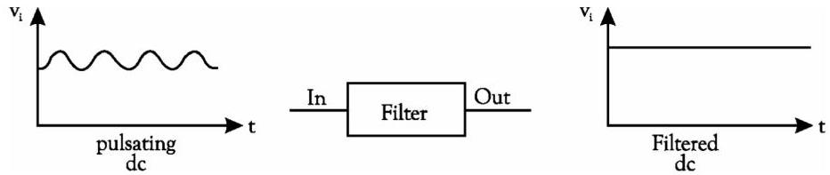
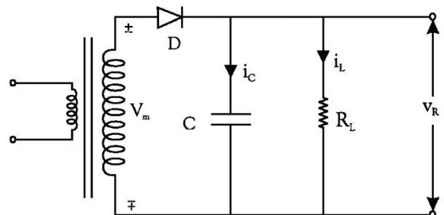
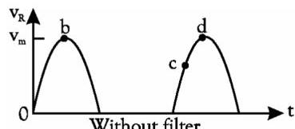
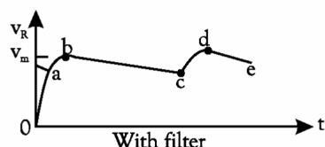
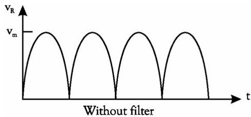
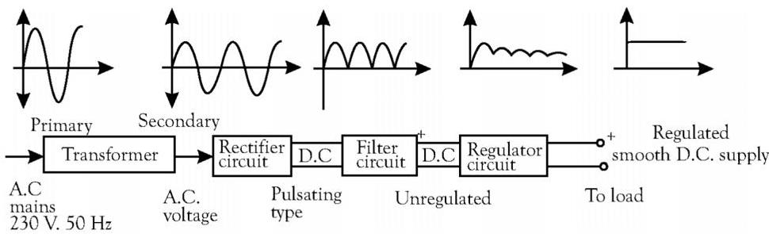
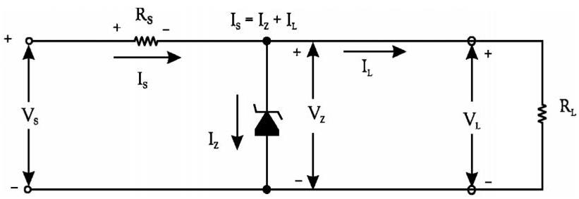
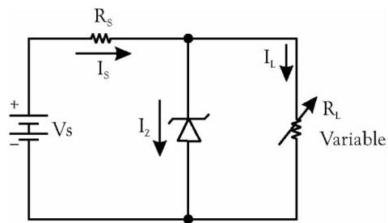

Filter is an electronic circuit used to minimize the ripple content in rectified output of a rectifier. The output of various rectifier circuits is pulsating. It has a dc value and some ac variations called ripples. This type of output is not useful for driving sophisticated electronic circuits / devices. The sophisticated circuits require a very steady dc output that approaches the smoothness of the output of the battery. A circuit that converts a pulsating output from a rectifier into a steady dc level is known as filter because it filters out the pulsations in the signal.

🔍
Figure 1.26 Idea of basic filter.
There are different types of filters popularly used in practice. They are :
Series inductor filter
Shunt capacitor filter
LC filter (or L-type filter)
$\pi$-filter
1.6.1
🔋
Shunt Capacitor Filter
In this circuit, a suitable single capacitor C is connected across the rectifier and in parallel with the load $R_{\mathrm{L}}$ to achieve filtering action. This type of filter is known as capacitor input filter. This filter circuit depends for its operation on the property of a capacitor to charge up (i.e., store energy) when conducting and to discharge (i.e., deliver energy) during the non-conduction cycle. In simple words, a capacitor opposes any change in voltage. When connected across a pulsating dc voltage, it tends to smoothen out or filter out the voltage pulsations (or ripples).
The filtering action of the simple capacitor filter when used in a half-wave rectifier is shown in Fig. 1.27.

(a) Circuit

(b) Output without filter

(c) Output with filter
Figure 1.27 Simple capacitor filter
1.6.2
📉
Approximate Analysis of Capacitor Filter
When positive half-cycle of the ac input is applied, the diode is forward-biased and hence is turned ON. This allows C to quickly charge up to $\mathrm{V}_{\mathrm{in}}$ [point b in Fig. 1.27 (c)] because charging time constant is almost zero. It is so because there is no resistance in the charging path except diode forward resistance which is negligible. Hence, capacitor follows the charging voltage as shown. After being fully charged, the capacitor holds the charge even if the input ac supply to the rectifier goes negative.
During the negative half-cycle, the capacitor attempts to discharge. However, it cannot discharge through D which, being now reverse-biased is OFF. Hence, it discharges through $\mathbf{R}_{\mathrm{L}}$ from point b to c in Fig. 1.27 (c) and its voltage decreases small amount. The discharging time constant $(= \mathrm{CR}_{\mathrm{L}})$ is usually 100 times more than the charging time. Hence, C does not have sufficient time to discharge appreciably. It is seen that even during negative half-cycle of the input supply, the capacitor maintains large voltage across $\mathbf{R}_{\mathrm{L}}$.
During the next positive half-cycle, when rectifier voltage exceeds the capacitor voltage represented by point c in Fig. 1.27 (c), C is again charged quickly to $\mathrm{V}_{\mathrm{in}}$ as represented by point d. Once more, input voltage goes negative, opening the diode, and forcing C to discharge through $\mathbf{R}_{\mathrm{L}}$ during the interval d to e. In this way, $\mathbf{R}_{\mathrm{L}}$ sees nearly constant dc voltage across it at all times.

🔍
Figure 1.28 Output of a capacitor filter in full-wave rectifier
The filtering action of this simple capacitor filter on a full-wave rectifier is shown in Fig. 1.28. It is seen that as compared to a HW rectifier
dc load voltage increases slightly towards $\mathrm{V}_{\mathrm{m}}$
ripple voltage has been reduced by half.
This decreased ripple is because of shorter discharge time before the capacitor is re-energised by another pulse of current.
1.6.3
📏
Device Parameters
📋
Key Filter Formulas
(1) Load Current: The load current has the same waveshape as $\mathrm{V}_{\mathrm{R}}$ because load is purely resistive.
(2) PIV: When diode is reverse-biased, the voltage across it is the sum of capacitor voltage (approx $\mathrm{V}_{\mathrm{m}}$) and secondary voltage ($\mathrm{V}_{\mathrm{m}}$). Hence, PIV is $2\mathrm{V}_{\mathrm{m}}$.
(3) Ripple Factor ($\gamma$): Its value is given by the formula
$$\gamma = \frac{1}{4\sqrt{3}fCR_L}$$
Also,
$$\gamma = \frac{2890}{CR_L} \tag{1.12}$$
where $f = 50 \, \text{Hz}$, $C$ is in $\mu\text{F}$ and $R_L$ in ohms.
Effect of Increasing Filter Capacitance
A capacitor has the basic property of opposing changes in voltage. Hence, a bigger capacitor would tend to reduce the ripple magnitude. It has been found that increasing the capacitor size has following effect:
increases $V_{\mathrm{dc}}$ towards the limiting value $V_{\mathrm{m}}$.
reduces the magnitude of ripple voltage.
reduces the time of flow of current pulse through the diode.
increases the peak current in the diode.
Advantages of Capacitor Filter
The circuit has less number of components.
The ripple voltage is low because the circuit has low ripple factor.
Capacitor filter is suitable for high voltage at small value of load currents.
Disadvantages of Capacitor Filter
Voltage regulation is very poor.
Ripple factor depends on load resistance.
Ripple content increases with decrease in load resistance.
1.6.4
⚖️
Voltage Regulation
In an unregulated power supply, output voltage changes whenever input supply voltage or load resistance changes. It is never constant. The change in voltage from no-load to full-load condition is called voltage regulation. The aim of a voltage regulator circuit is to reduce these variations to zero or, at least, to the minimum possible value. Voltage regulation is the next stage of filter.
The percentage regulation or simply, regulation of a power supply is given by
$V_{\mathrm{NL}}$ = no-load or open-circuit terminal voltage of the supply
$V_{\mathrm{FL}}$ = full-load terminal voltage of the supply
1.7
🔌
Power Supplies
1.7.1 Principle
A regulated power supply is an electronic circuit designed to keep the output voltage nearly constant under varying input voltage conditions and varying load conditions. A dc regulated power supply consists of various stages as shown in Fig. 1.29.

🔍
Figure 1.29 Regulated dc power supply
In regulated power supply, an ac voltage (of $230\mathrm{V}$, $50\mathrm{Hz}$) is step downed by means of a suitable transformer and converted into pulsating voltage by means of a rectifier circuit. To remove the ripple content of the signal, a filter circuit is used. The output of the filter circuit is a smooth dc voltage but unregulated. By means of a voltage regulator circuit as the last stage, the power supply provides constant dc voltage at the output. Presently, the complete regulator circuit is available in IC (Integrated Circuit) form.
1.7.2
📊
Power Supply Performance Parameters
(1) Source Effect: Source regulation (SR) is defined as the change in regulated dc load voltage for a specified range of line voltage typically $230\mathrm{V}\pm 10\%$.
(3) Output Resistance: It is defined as change in output dc voltage for corresponding change in load current when input ac voltage and the temperature of the system are constant.
$$\mathrm {R} _ {\text {out}} = \frac {\Delta V _ {\text {out}}}{\Delta I _ {L}} \left| _ {V _ {\mathrm {m}} \text { and temperature constant}} \right. \tag{1.17}$$
(4) Voltage Stability Factor $(S_{\mathrm{V}})$: It is defined as change in output dc voltage for corresponding change in input ac voltage when load current and the temperature of the system are constant.
$$S _ {V} = \frac {\Delta V _ {\text {out}}}{\Delta V _ {\text {in}}} \mid_ {I _ {L} \text { and temperature constant}} \tag {1.18}$$
(5) Temperature Stability Factor:
$$S _ {T} = \frac {\Delta V _ {\text {out}}}{\Delta T} \mid_ {V _ {in} \text { and } I _ {L} \text { constant}} \tag {1.19}$$
(6) Ripple Rejection (RR): It is a factor which indicates how effectively the regulator circuit rejects the ripples and attenuates it from input to output.
$$\mathrm {RR'} = 20 \log_{10} \mathrm{RR} \, dB \tag {1.20}$$
1.7.3
🛡️
Zener Diode Voltage Regulators
Principle
A voltage regulator provides constant output voltage irrespective of small variations in input voltage. Zener diode is specially designed to operate in breakdown region called Zener breakdown, where current is limited only by external resistance and the power dissipation of the diode. i.e., once the applied voltage under reverse bias is equal to breakdown voltage, the current increases very rapidly and the diode voltage $(V_{Z})$ stays essentially constant. This property of Zener diode can be used for voltage regulation.
Circuit
Fig. 1.31 shows a circuit of Zener diode shunt regulator. Since the Zener is connected in parallel (or shunt) with the load, therefore the circuit is known as shunt regulator. A resistance, $(R_{S})$ is connected in series with the Zener to limit current in the circuit. Therefore, the resistance $R_{S}$ is also known as series current limiting resistor. The output voltage $(V_{L})$ is taken across the load resistance $(R_{S})$. For proper operation, the input voltage $(V_{S})$ must be greater than the Zener voltage $(V_{Z})$. This ensures that Zener operates in the reverse breakdown region.

🔍
Figure 1.31 Circuit diagram of Zener diode voltage regulator
The input current (i.e., current through the limiting resistor) is given by
$$I _ {S} = \frac {V _ {S} - V _ {Z}}{R _ {S}}$$
where $V_{S}$ is the dc input voltage to the regulator and $V_{Z}$ is the Zener voltage.
If the reverse resistance of Zener diode is $r_Z$, then there is a voltage drop across it which is equal to $I_Z \cdot r_Z$. Therefore, the voltage across the terminals of the Zener diode is
$$V _ {L} = V _ {Z} + I _ {Z} \cdot r _ {Z} \tag {1.21}$$
If the Zener resistance is negligible, then the load voltage, $V_L = V_Z$ and the current through the load resistance is given by the relation,
$$I _ {L} = \frac {V _ {L}}{R _ {L}} \quad \text{and} \quad I _ {Z} = I _ {S} - I _ {L} \tag {1.22}$$
Working
The working of Zener diode regulator may be discussed under the two heads, namely regulation with varying input voltage and regulation with varying load resistance.
(1) Regulation with varying input voltage
Consider the regulator circuit as shown in Fig. 1.32 (a). Here the load resistance $(R_L)$ is kept fixed and the input voltage $(V_S)$ varies within the limits.
(i) If the input voltage increases, the input current $(I_S)$ also increases. This increases the current through Zener diode, without affecting the load current $(I_L)$. The increase in input current will also increase the voltage drop across series resistance $(R_S)$, thereby keeping the load voltage $(V_L)$ as constant.
(ii) On the other hand, if the input voltage decreases, the input current $(I_S)$ also decreases. As a result, the current through Zener $(I_Z)$ will also decrease. Consequently, the voltage drop across series resistance $(R_S)$ will be reduced. Thus the load voltage $(V_L)$ and load current $(I_L)$ remains constant.
Figure 1.32 (a)
(2) Regulation with varying load resistance
Consider the regulator circuit as shown in Fig. 1.32 (b). Here the input voltage $(\mathrm{V}_{\mathrm{S}})$ is kept fixed and the load resistance $(\mathbb{R}_1)$ varies. The variation of load resistance changes the load current $(\mathrm{I_L})$ through it, thereby changing load voltage $(\mathrm{V}_{\mathrm{L}})$ across it.
(i) When the load resistance $(\mathbb{R}_1)$ decreases, the load current $(\mathrm{I_L})$ increases. This causes the Zener current $(\mathrm{I_Z})$ to decrease. As a result of this, the input current and the voltage drop across series resistance $(\mathbb{R}_S)$ remains constant. Thus the load voltage $(\mathrm{V_L})$ remains constant.
(ii) On the other hand, if the load resistance increases, the load current decreases. As a result, the Zener current increases. This again keeps the values of input current and voltage drop across series resistance $(\mathbb{R}_S)$ as constant. Thus the load voltage $(\mathrm{V_L})$ remains constant.

Figure 1.32 (b)
Optimum Value of Current Limiting Resistor $(R_{S})$
The value of current limiting resistor must be properly selected to fulfill the following two requirements:
When the input voltage is minimum and the load current is maximum, sufficient current must be supplied to keep the Zener diode within its breakdown region (or regulating region).
When the input voltage is maximum and the load current is minimum, the Zener current must not increase the maximum rated value.
The optimum value of current limiting Resistor $(\mathbb{R}_S)$ can be determined by using the following two equations for maximum and minimum values of Zener current:
From equation (i), we find that the minimum value of current limiting resistor,
$$R _ {S (m i n)} = \frac {V _ {S (m a x)} - V _ {Z}}{I _ {Z (m a x)} + I _ {L (m i n)}} \tag {1.23}$$
and from equation (ii), the maximum value of current limiting resistor,
$$R _ {S (\max )} = \frac {V _ {S (m i n)} - V _ {Z}}{I _ {Z (m i n)} + I _ {L (m a x)}} \tag {1.24}$$
The value of current limiting resistor $(\mathbb{R}_S)$ should be chosen in such a way that its value should be between $\mathbb{R}_S(\max)$ and $\mathbb{R}_S(\min)$ i.e.,
The maximum load current, which can be supplied to load resistor $(\mathbb{R}_L)$ is limited to $\mathrm{I_Z}$ (max) - $\mathrm{I_Z}$ (min) which is usually of few milli amperes.
A large amount of power is wasted in the Zener-diode and the series resistance $(\mathbb{R}_S)$ in comparison with the load power.
The regulation factor and the output resistance are not very low.